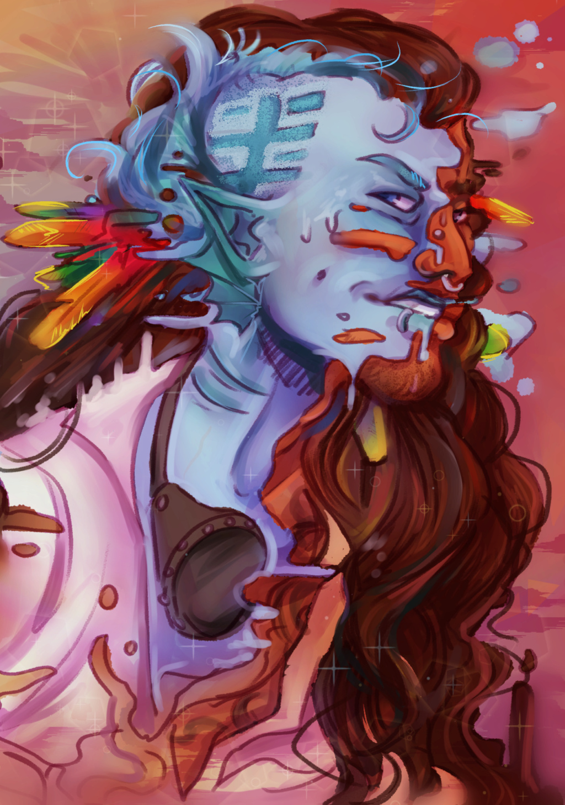

Астразоаны (Astrazoans)
Физическое описание
В истинной форме Астразоан похож на большую морскую звезду с пятью–семью конечностями, скрытыми органами и мешком в центре. Его кожа может менять цвет и текстуру, а все внутренние органы способны перестраиваться для новых форм. Большинство времени Астразоаны проводят в обличьях других рас, часто настолько искусно, что отличить их можно только при детальном медосмотре. Старшие Астразоаны зачастую имеют несколько личностей - по одной на каждую конечность, что делает их по-настоящему уникальными и многогранными существами.
Возможно, вы...
- Легко принимаете новые формы и личности, подстраиваясь под окружение.
- Находите радость в изучении чужих культур и традиций.
- Показываете свою истинную форму только тем, кому полностью доверяете.
- Чувствуете себя "своим" почти в любой компании, не теряя при этом уникальности.
Вероятно, другие...
- Завидуют вашей способности к изменению внешности и манер.
- Не всегда узнают вас — ни внешне, ни по имени.
- Удивляются вашей эрудиции и врождённой дипломатичности.
- Подозревают, что у вас всегда есть второй, третий и седьмой "я".
Общество и культура
Астразоаны - редкий и таинственный вид, не имеющий родного мира или единой истории. Они селятся среди других рас, быстро принимая их привычки, язык, обычаи и даже способы мышления. Личное имя и облик часто меняются, а настоящее имя хранится в секрете. Несмотря на свою гибкость, большинство Астразоанов гордятся уникальностью и стараются беречь других представителей своего вида, оставаясь в тени и избегая раскрытия. Их дипломатичность и умение видеть ситуацию с разных точек зрения делают их отличными посредниками и разведчиками.
Отношение к другим расам
О Людях: "Вечно суетятся и часто доверяют первому впечатлению. Иногда легко стать для них своим, иногда совсем невозможно."
О Лашунта: "Ценят дипломатию и рассудительность, но редко раскрывают истинные чувства. С ними легко вести игру в маски и, кажется, им это даже нравится."
О Йсоках: "Любят новизну, ценят гибкость. С Йсоками приятно делиться историями, а иногда и личинами. Они редко судят по внешности, но всегда замечают детали."
Об Андроидах: "Схожи с нами - вечные вопросы о своей природе, смена форм, поиск места в мире. Между нами легко возникает взаимное уважение, даже без слов."
О Пахтра: "Ценят традиции и верность, не всегда понимают, зачем менять маски. Но их честность делает их надёжными, если заслужить доверие."
О Весках: "Прямолинейны, видят мир в чёрно-белых тонах. Их тяжело обмануть, но легко вывести из себя. Лучше держаться на расстоянии или соблюдать их правила."
О Ширренах: "Чувствуют коллектив, но принимают индивидуальность. Иногда даже слишком интересуются нашими личностями - приходится менять их чаще обычного."
О Скиттермандерах: "Не задают лишних вопросов, легко принимают перемены и обожают всё необычное. С ними проще всего быть собой и кем угодно ещё."
Имена
Астразоаны обычно имеют отдельные имена для каждой личности или формы, но хранят истинное имя в тайне. Настоящее имя часто состоит из трёх-четырёх слогов, например: Адрогалл, Азуша, Си, Сирибан, Фарахан, Лейлейка, Мийлин, Суникай, Ксенелей, Занилей. Часть Астразоанов используют первый слог истинного имени как короткое прозвище для чужих.
